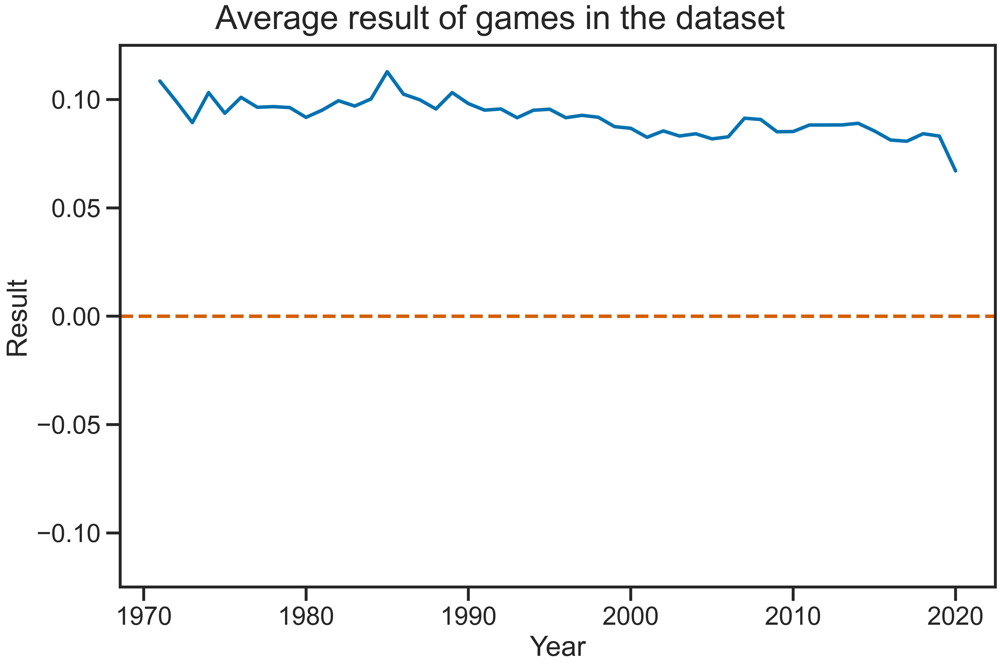
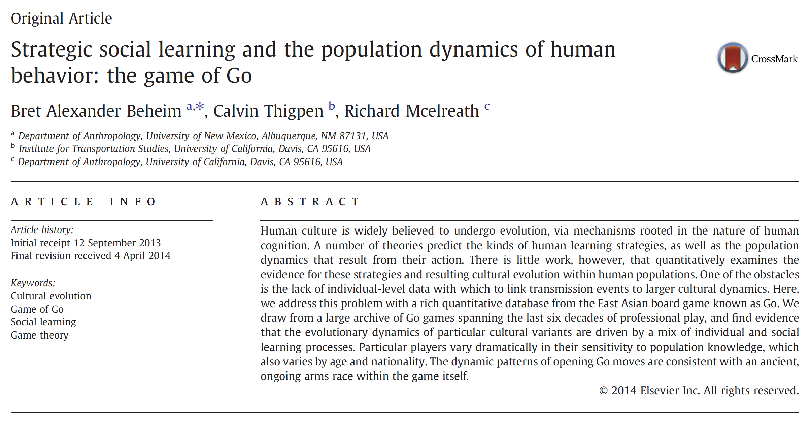
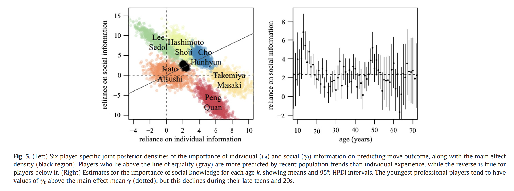

why I think studying chess is interesting
Egor Lappo
Follow along at tiny.one/chessslides
Theory
Mainline/sideline
Low skill level → be precise and do not blunder
High skill level → set the tone for the game
Transformation of advantages
Balance/imbalance
Solved completely: endgame tablebase
The players are ranked using the Elo rating system.
DeepBlue, Stockfish, AlphaZero
A distinguishing feature of the game.
The move choice is affected by
The meta(strategy) is determined by
...or is it? I don't know, and I want to know.
Chess players become better as they play.
How?
...but why study just the openings?
Computational limits of humans and computers
A set of high-quality games.
I used Caissabase:
database of chess games compiled from multiple sources.
What can we learn from global aggregates?
Encode win for white as 1, win for black as -1, draw as 0.
The social learning community tried to work with Go.
Fit a Bayesian hierarchical model for odds ratio of choosing one starting move vs the rest.
Map players onto a 2D space
I can repeat this, with odds-ratio of choosing to play the Sicilian:
There is another approach.
Surprisingly, this is a universal pattern!
Would be cool to understand how this happens